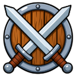
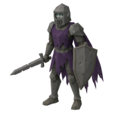
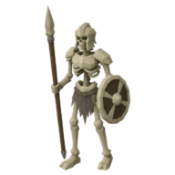

The Warden's Field Kit
Joss keeps a second set of gear ready for every hunt. Prove you can survive both the restless dead and their guardians, and he will teach you to do the same.
| Property | Value |
|---|---|
| Quest giver | |
| Zone | 🏚️ Bleakhaven Ruins |
| Quest points | 3 |
| Requirements | ⚔️ Combat level 75 |
Objectives
- Defeat 50 ×

Wight - Defeat 50 ×

Bone Sentinel - Hand in
 Grave Bones ×100
Grave Bones ×100
Rewards
- 🪙 20,000 coins
- 12,000 🛡️ Defence XP
- 🔓 gearSetupQuest